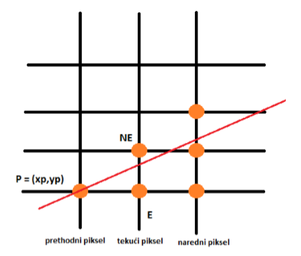

Midpoint algoritam predstavlja varijantu Bresenhamov-og algoritma.
Videli smo da Brasenham-ovim algoritmom koji je nastao 1965. godine je omogućeno crtanje duži korišćenjem celobrojne aritmetike što je činilo ovaj algoritam najbržim do tada.
Pitteway (1967) i Van Aken (1984) su Brasenhamov algoritam unapredili tako da se može uopštiti na proizvoljnu krivu drugog reda.
Posmatrajmo sledeću sliku:

Zahtevi o kojima vodimo računa ovde su:
a) 0 < m < 1
b) (x0,y0) je donja leva tačka, a (x1,y1) gornja desna i potrebno ih je spojiti
Označili smo piksel sa P(xp,yp) i u narednom koraku pravimo izbor između samo dva piksela označena sa: E i NE.
Kod Bresenham-ovog algoritma razmatra se rastojanje tačaka E i NE do presečne tačke prave koju rasterizujemo sa pravom x = xp + 1 i bira se bliže rastojanje, dok kod Midpoint algoritma razmatra se odnos tačke M (središta duži određene tačkama E i NE)
sa pravom koju rasterizujemo pri čemu ako je M ispod preseka prave koju rasterizujemo sa pravom x = xp + 1 biramo tačku NE, a inače tačku E.
Glavni problem sa kojim se ovde susrećemo je kako proveriti da li se tačka M nalazi iznad ili ispod date prave korišćenjem celobrojne aritmetike.
Kao što je poznato, iz eksplicitne jednačine prave oblika:
y=m*x + B
možemo dobiti implicitni oblik jednačine prave:
y = (dy / dx)*x + b; (dx = x1 − x0, dy = y1 − y0).
Ukoliko levu i desnu stranu ovako dobijene jednačine prave pomnožimo sa dx dobijamo sledeće:
y*dx = dy*x + B*dx
tj.
F(x,y) = dy*x – dx*y + B*dx = 0, −dx < 0 (zbog zahteva 0 < m < 1).
Ukoliko uvedemo sledeće smene:
a = dy, b = −dx < 0, c = B *dx
jednačina dobija sledeći oblik:
F(x,y) = a*x + b*y + c = 0.
Vrednost F(x,y) jednaka je 0 za tačke na pravoj, pozitivna je za tačke ispod prave, a negativna za tačke iznad prave. Uvešćemo pojam tzv. promenljive odlučivanja, vrednosti:
d = F(xp + 1, yp + 1/2 )
na osnovu koje se pravi izbor:
d < 0 – biramo E
d > 0 – biramo NE
d = 0 – stvar dogovora, npr. biramo E.
Pitanje koje se postavlja jeste koja je pozicija tačke M i vrednost promenljive d za narednu liniju mreže. Naravno, odgovor zavisi od toga da li smo u prethodnom koraku odabrali piksel E ili NE.
Ukoliko smo u prethodnom koraku odabrali piksel E tada:
dnew = F(xp + 2, yp +1/2) = a*(xp + 2) + b*(yp + 1/2) + c =
= a + a*(xp + 1) + b(yp + 1/2) + c = a + dold = dold + dy =
= dold + ∆E
Ukoliko smo u prethodnom koraku odabrali piksel NE tada:
dnew = F(xp + 2, yp + 3/2) = a*(xp + 2) + b*(yp + 3/2) + c =
= a + b + a*(xp + 1) + b*(yp + 1/2) + c = a + b + dold =
= dold + dy – dx =
= dold + ∆NE
∆E je korektivni faktor i nazivamo ga razlikom unapred.
∆NE je korektivni faktor i nazivamo ga razlikom unapred.
Takođe,potrebno nam je da eksplicitno izračunamo prvu vrednost:
dstart = F(x0 + 1, y0 + 1/2) = a*(x0 + 1) + b*(y0 + 1/2) + c = a + b/2;
Da bi se izbeglo deljenje sa dva, sve vrednosti množimo sa 2; pritom relevantni znakovi ostaju isti:
dstart = 2*a + b = 2*dy –dx
1. ako je dold ≤ 0, onda dnew = dold + dy
2. ako je dold > 0, onda je dnew = dold + dy − dx
U polju ispod je dat pseudokod za rasterizaciju prave korišćenjem Midpoint algoritma.
1.dx = x1 - x0;
2.dy = y1 - y0;
3.y = y0;
4.d = 2*dy - dx;
5.incr1 = dy;
6.incr2 = dy-dx;
7.for x:=x0 to x1
8.WritePixel(pDC, x, y, value);
9.if d<=0
10.d = d + incr1;
11.else
12.y = y + 1;
13.d = d + incr2;
14.endif
15.endfor
Treba napomenuti da prethodna izvođenja kao i kod su svedeni na poredak sleva nadesno što nije uvek dobro koristiti zbog stilova. Takođe, važan je odabir piksela kada je vrednost promenljive odlučivanja d = 0 jer usled različitog nagiba prava može imati različitu osvetljenost. S druge strane, kompletna računica se svodi na celobrojnu aritmetiku kao i kod Brasenham-ovog algoritma.